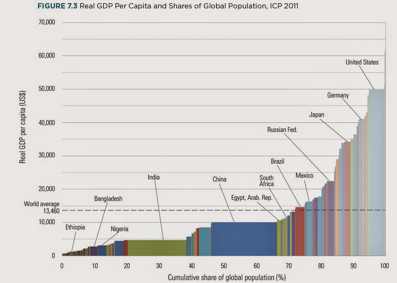

EPPS 6356: Assignment 1
Question 1
Anscombe’s quartet famously shows that identical summary statistics can mask radically different data patterns. All four datasets have the same mean, variances, correlations and even regression line. But, when we plot them, their scatterplots differ dramatically. Dataset I is a normal linear scatter, so a regular least-squares fit works well. Dataset II forms a curved, almost parabolic shape, so a linear model misses the relationship. Here, a polynomial or nonlinear regression, or a transformation like taking natural logs, works better. Dataset III is mostly linear but has one extreme point that pulls the regression line. Using robust regression or doing an outliers can fix this. Dataset IV is a vertical cluster with one far-away point, which creates a misleading correlation. Here, plotting the data, checking influence measures like Cook’s distance, or using robust correlations like Spearman’s is important. Overall, these examples show that plots and visual checks are essential, and we shouldn’t rely only on numbers when analyzing data.
Question 2
Spring
library(gsubfn)
{r bexp2, echo=TRUE}
# Title Fall color
# Credit: https://fronkonstin.com
# Install packages
install.packages("gsubfn")
install.packages("tidyverse")
library(gsubfn)
library(tidyverse)
# Define elements in plant art
# Each image corresponds to a different axiom, rules, angle and depth
# Leaf of Spring
axiom="X"
rules=list("X"="F-[[X]+X]+F[+FX]-X", "F"="FF")
angle=22.5
depth=6
for (i in 1:depth) axiom=gsubfn(".", rules, axiom)
actions=str_extract_all(axiom, "\\d*\\+|\\d*\\-|F|L|R|\\[|\\]|\\|") %>% unlist
status=data.frame(x=numeric(0), y=numeric(0), alfa=numeric(0))
points=data.frame(x1 = 0, y1 = 0, x2 = NA, y2 = NA, alfa=90, depth=1)
# Generating data
# Note: may take a minute or two
for (action in actions)
{
if (action=="F")
{
x=points[1, "x1"]+cos(points[1, "alfa"]*(pi/180))
y=points[1, "y1"]+sin(points[1, "alfa"]*(pi/180))
points[1,"x2"]=x
points[1,"y2"]=y
data.frame(x1 = x, y1 = y, x2 = NA, y2 = NA,
alfa=points[1, "alfa"],
depth=points[1,"depth"]) %>% rbind(points)->points
}
if (action %in% c("+", "-")){
alfa=points[1, "alfa"]
points[1, "alfa"]=eval(parse(text=paste0("alfa",action, angle)))
}
if(action=="["){
data.frame(x=points[1, "x1"], y=points[1, "y1"], alfa=points[1, "alfa"]) %>%
rbind(status) -> status
points[1, "depth"]=points[1, "depth"]+1
}
if(action=="]"){
depth=points[1, "depth"]
points[-1,]->points
data.frame(x1=status[1, "x"], y1=status[1, "y"], x2=NA, y2=NA,
alfa=status[1, "alfa"],
depth=depth-1) %>%
rbind(points) -> points
status[-1,]->status
}
}
ggplot() +
geom_segment(aes(x = x1, y = y1, xend = x2, yend = y2),
lineend = "round",
color="palegreen3", # Set your own Spring color?
data=na.omit(points)) +
coord_fixed(ratio = 1) +
theme_void() # No grid nor axesQuestion 3

Figure 1. Real GDP per capita vs cumulative global population (ICP 2011). Source: Matthew Yglesias, Vox (2014).
The chart plots Real GDP per capita (USD) on the vertical axis against cumulative share of global population in horizontal scale (0–100%). A dashed line marks the world average at 13,460 USD. Several countries are labeled: Ethiopia, Nigeria, Bangladesh, India, China, Egypt, South Africa, Mexico, Brazil, Russia, Japan, Germany, and the United States. Bars of different colors extend upward from the horizontal baseline, with heights ranging from near zero up to about 50,000 US$. At a glance, the story is powerful. Most of the world’s population lives below the global average income, with a steep climb only at the far right for advanced economies like Germany and the United States. The design makes inequality visually so obvious. But while the message is strong, execution raises some problems. The x-axis is labeled only with numbers 0–100 (%). While labeled as “cumulative share of global population (%)”, the steps are uneven in bar width, which could confuse readers who expect evenly distributed shares. Adding gridlines or population breakpoints would help. The use of many colors distracts more than it informs. Colors are not grouped by region or income level, so the rainbow of bars adds noise. For example, China and India, which occupy huge shares of the population, do not stand out visually from smaller blocks. Another issue is scale. Most of the countries in the chart are compressed near the bottom, since many countries fall far below $10,000. The y-axis goes up to $70,000, but only the United States comes close to that figure. This exaggerates the “empty space” in the upper range overemphasizes the richest economies and reduces visual contrast among mid-income countries (Brazil vs. China vs. South Africa) and hides differences among low- and middle-income countries. The dashed “world average” line is helpful, but it also highlights how misleading an average can be when the distribution is so skewed. A simpler design could improve clarity. Using fewer, meaningful colors (for regions or income groups) would reduce clutter. A log scale on the y-axis could reveal variation among poorer countries instead of flattening them. Alternatively, grouping countries by world population would make the distribution easier to interpret than hundreds of tiny bars. In sum, the chart succeeds in showing the stark inequality of global incomes, but it also burdens the reader with unnecessary complexity. Its message would be stronger with clearer axis labeling, more purposeful use of color, and a scale that lets us see the billions of people living far below the world average.
Reference: Yglesias, Matthew. 2014. “The World Bank Summed Up the Entire Global Economy in One Chart.” Vox, August 10. https://www.vox.com/xpress/2014/8/10/5988295/real-gdp-per-capita-chart